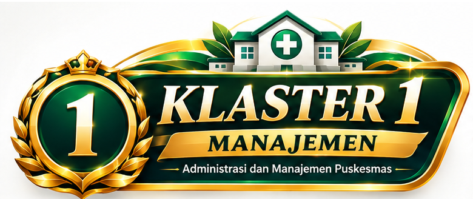
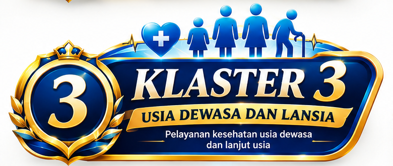

5 KLASTER PELAYANAN
Temukan layanan dengan cepat
Pilih klaster sesuai kebutuhan. Detail pelayanan utama dibuka dari kartu layanan, sedangkan informasi pendukung tetap berada di dalam klaster yang sama.

Klaster 1 — ManajemenKetatausahaan dan pengelolaan manajemen Puskesmas
01
Ketatausahaan & Layanan AdministrasiFront office, pendaftaran, informasi/pengaduan, surat, dan administrasi layanan.
02Manajemen Sumber DayaSDM, sarana, prasarana, obat, dan perbekalan kesehatan.
03Manajemen PuskesmasPerencanaan, koordinasi, pemantauan, evaluasi, dan keterpaduan antar-klaster.
04Mutu & Keselamatan PasienPengelolaan mutu, keselamatan, komitmen, inovasi, dan perbaikan berkelanjutan.
05Manajemen JejaringJejaring fasilitas kesehatan dan pengelolaan pelayanan berbasis wilayah.
06Pemberdayaan MasyarakatKeterlibatan masyarakat dalam pembangunan kesehatan.
07Struktur OrganisasiStruktur dan pembagian fungsi manajemen Puskesmas.
Informasi Pelayanan Klaster 1
🕒 Jadwal
Jam pelayanan dan batas pendaftaran tersedia pada halaman Jadwal Pelayanan.
💳 Tarif
Informasi biaya layanan tersedia pada halaman Tarif Pelayanan dan mengikuti ketentuan resmi yang berlaku.
📋 Persyaratan
Siapkan identitas dan dokumen jaminan kesehatan bila tersedia. Persyaratan rinci mengikuti jenis layanan pada Klaster 1.
🧭 Alur
Datang/daftar → verifikasi → diarahkan ke layanan → proses administrasi/pemeriksaan → tindak lanjut sesuai kebutuhan.
💬 Layanan Online
Hubungi WhatsApp resmi untuk informasi awal.
Catatan: detail lengkap manajemen Klaster 1 tersedia di Manajemen Puskesmas.
Klaster 2 — Ibu & AnakPelayanan kesehatan ibu, bayi, anak, dan remaja
01
Pelayanan Kesehatan Ibu Hamil, Bersalin, dan NifasPelayanan kesehatan ibu sesuai kebutuhan dan kondisi.
02Pelayanan AnakPemeriksaan dan pelayanan kesehatan anak.
03Pelayanan ImunisasiPemberian imunisasi sesuai jadwal dan ketentuan.
04Pelayanan Tumbuh Kembang AnakPemantauan pertumbuhan dan perkembangan anak.
Informasi Pelayanan Klaster 2
🕒 Jadwal
Jadwal pelayanan mengikuti jam operasional Puskesmas. Lihat Jadwal Pelayanan.
💳 Tarif
Tarif layanan mengikuti ketentuan resmi. Lihat Tarif Pelayanan.
📋 Persyaratan
Bawa identitas anak/pendamping dan dokumen jaminan kesehatan bila tersedia. Persyaratan dapat berbeda menurut layanan.
🧭 Alur
Pendaftaran → verifikasi → pemeriksaan sesuai layanan → edukasi/tindak lanjut → rujukan bila diperlukan.
💬 Layanan Online
Hubungi WhatsApp resmi untuk informasi awal.

Klaster 3 — Dewasa & LansiaPelayanan kesehatan usia dewasa dan lanjut usia
01
Pelayanan Kesehatan Usia DewasaPemeriksaan dan pelayanan kesehatan bagi usia dewasa.
02Pelayanan Kesehatan LansiaPemantauan dan pelayanan kesehatan lanjut usia.
03Pelayanan Keluarga Berencana (KB)Konseling dan pelayanan keluarga berencana.
04Pelayanan Calon Pengantin (Catin)Pelayanan kesehatan bagi calon pengantin.
05Upaya Berhenti Merokok (UBM)Konseling dan pendampingan untuk mengurangi atau berhenti merokok.
Informasi Pelayanan Klaster 3
🕒 Jadwal
Lihat Jadwal Pelayanan untuk jam operasional dan batas pendaftaran.
💳 Tarif
Lihat Tarif Pelayanan untuk informasi biaya yang berlaku.
📋 Persyaratan
Siapkan identitas dan dokumen pendukung sesuai jenis layanan. Detail dapat dilihat pada halaman layanan terkait.
🧭 Alur
Pendaftaran → skrining/pemeriksaan → pelayanan sesuai kebutuhan → edukasi → tindak lanjut.
💬 Layanan Online
Hubungi WhatsApp resmi untuk informasi awal.
Klaster 4 — Penanggulangan Penyakit MenularPencegahan, deteksi, pengendalian, dan tindak lanjut penyakit menular
01
Pelayanan TuberkulosisSkrining, penemuan, pemeriksaan, pengobatan, dan tindak lanjut TB.
02Pelayanan PDP / VCT / IMSPencegahan, konseling, pemeriksaan, dan tindak lanjut HIV/IMS.
03Penanganan Gigitan Hewan Pembawa Rabies (GHPR)Penanganan awal pajanan gigitan atau cakaran hewan berisiko rabies.
04Pelayanan Klinik SanitasiKonsultasi dan tindak lanjut masalah kesehatan berkaitan dengan lingkungan dan sanitasi.
Informasi Pelayanan Klaster 4
🕒 Jadwal
Lihat Jadwal Pelayanan untuk jam operasional dan batas pendaftaran.
💳 Tarif
Lihat Tarif Pelayanan untuk informasi biaya yang berlaku.
📋 Persyaratan
Persyaratan mengikuti jenis layanan dan kondisi pasien. Bawa identitas serta dokumen pendukung bila tersedia.
🧭 Alur
Pendaftaran → skrining/penilaian risiko → pemeriksaan → tata laksana → pemantauan dan tindak lanjut.
💬 Layanan Online
Hubungi WhatsApp resmi untuk informasi awal.
Klaster 5 — Lintas KlasterPelayanan penunjang dan layanan lintas kelompok
01
Pelayanan Gawat DaruratPenanganan kondisi yang membutuhkan pertolongan segera.
02Pelayanan Kesehatan Gigi & MulutPemeriksaan dan tindakan kesehatan gigi dan mulut.
03Pelayanan Kefarmasian / Resep ObatPenerimaan resep, penyiapan obat, pemberian informasi, dan pemantauan.
04Pelayanan LaboratoriumPemeriksaan laboratorium sesuai indikasi dan ketersediaan pemeriksaan.
05Penanggulangan Krisis KesehatanDukungan pelayanan kesehatan dalam situasi krisis sesuai mekanisme yang berlaku.
06Cek Kesehatan Gratis (CKG)Skrining dan pemeriksaan kesehatan sesuai petunjuk teknis program CKG.
Informasi Pelayanan Klaster 5
🕒 Jadwal
Lihat Jadwal Pelayanan untuk jam operasional dan batas pendaftaran.
💳 Tarif
Lihat Tarif Pelayanan untuk informasi biaya layanan yang berlaku.
📋 Persyaratan
Persyaratan mengikuti jenis layanan. Untuk layanan tertentu diperlukan rujukan, resep, atau dokumen pendukung.
🧭 Alur
Pendaftaran → verifikasi → pemeriksaan/tindakan → layanan penunjang → tindak lanjut atau rujukan.
💬 Layanan Online
Hubungi WhatsApp resmi untuk informasi awal.